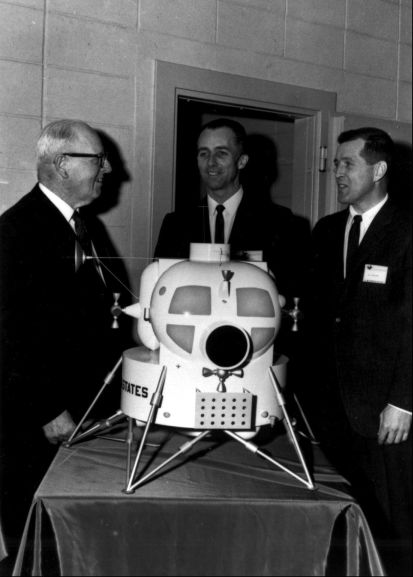

When Grumman was selected for Apollo, the company expanded from an aircraft producer into a major aerospace concern. This transition reflected a long-term resolution, and a considerable investment of funds, on the part of the firm's senior management to penetrate the American space market.
The story of Grumman's drive for a role in manned space flight has a rags-to-riches, Horatio Algerlike quality. The company had competed for every major NASA contract and, except for the unmanned Orbiting Astronomical Observatory satellite, had never finished in the money. Late in 1958, when NASA was looking for a contractor for the Mercury spacecraft, Grumman had tied with McDonnell in the competition. But only a short time before, the Navy had awarded several new aircraft development programs to Grumman. For almost three decades the words Grumman and carrier-based aircraft had been virtually synonymous. To avoid disrupting
Navy scheduling and to ensure its contractor's concentration on Mercury, NASA had selected McDonnell.70 Nevertheless, board chairman and company founder Leroy R. Grumman and president E. Clinton Towl had continued to support study programs to strengthen the firm's capabilities and build a cadre of experienced engineering experts. By 1960 Grumman's study group, guided principally by Thomas J. Kelly, had begun to focus on lunar flight, examining lunar spacecraft concepts and guidance and trajectory requirements. The company had also done some guidance work on circumlunar flight for the Navy and passed its findings on to NASA.71
When NASA awarded the three six-month Apollo feasibility contracts in the latter half of 1960, Grumman again bid unsuccessfully. But Kelly and about 50 engineers continued their investigations full-time, without monetary assistance from NASA. Through a series of informal briefings and reports, they kept the agency informed of what they were doing. This group, on one occasion, said that the lack of funds had limited its investigations to lunar-orbital flights. In mid-May, when the three funded feasibility contractors had submitted final reports, Grumman (like several other firms that had gone ahead independently) also presented the results of its study to the Manned Spacecraft Center.72
Grumman officials had begun to realize just what a massive undertaking the Apollo program would be. After much soul searching, the company decided not to bid alone for the command module contract, joining with General Electric, Douglas, and Space Technology Laboratories in submitting a proposal. Grumman's chief contribution was cockpit design and layout. A strengthened space working group was now headed by Joseph G. Gavin, Jr., a Grumman vice president. On three floors of a commercial building near Independence Hall in Philadelphia, the teams, sometimes numbering 200 persons, from the four companies worked day and night to put its proposal together.73
When NASA announced that North American had won the Apollo spacecraft contract, at the end of November 1961, the prevalent feeling at Grumman was, as one tired engineer recalled, "What do we do now?" One segment of the combined proposal, however, gave them some ideas and provided a reason to continue. The four firms had examined many aspects of a lunar landing mission beyond what was called for by NASA. One central feature the team explored was the mission mode, only lightly touched on in the proposal request. At the outset of work on the contract bid, each of the companies had studied a different mode. By chance, Grumman had drawn lunar-orbit rendezvous. After the studies had been compared, this approach was recommended in the joint proposal.74 In the fall and winter of 1961–1962, Gavin turned full attention to lunar rendezvous and to the separate vehicle that would be needed.
Under the leadership of Gavin as Program Director and Robert S. Mullaney as Program Manager, the study group had achieved formal status in the corporate structure of Grumman and had acquired a number of Grumman's most experienced engineering and design experts. The team studied configurations of staged versus unstaged vehicles, subsystem requirements, propulsion needs, and weight tradeoffs for the lunar lander. Thus, when NASA issued the requests for proposals for the lunar module, Grumman was able to include a large amount of solid information in its bid. Even before lunar-orbit rendezvous had been chosen, Grumman had begun to build simulators, to define the facilities that would be needed for the program, and to construct the aerospace building where, in the beginning, all the design work was done.
Gavin and his people were confident that they were well founded in the technical requirements of the program; they also recognized that management capabilities would be an important criteria in the selection. They therefore enlisted a team of potential subcontractors and stressed the expertise of these allies. Prominent among the subcontractors were the firms for the two propulsion systems (Bell and Rocketdyne), which included the all-important throttleable descent engine.75

Congressman George Miller left examines a one-eighth-scale lunar module shown by Grumman officials Joseph Gavin and Robert Mullaney.
Once Grumman had been selected, NASA agreed that a definitive contract could be written immediately, instead of (as with North American) an interim, or "letter," contract followed by interminable negotiations leading to final agreement. For the lunar module, Rector said, "we negotiated [the whole program], even though we didn't understand [it] that well at the time."
Grumman officials did not really know what NASA wanted. It was, in Kelly's words, "an example of ignorance in action, . . . at least on our part." Neither side fully appreciated the size of the development they were undertaking. The Grumman group entered negotiations under the impression that it was simply going to build the vehicle it had proposed, but "that wasn't what the NASA people had in mind." NASA expected that, once negotiations were concluded, Grumman would begin a preliminary design phase, redefining the complete spacecraft item by item. In the long run, the definition phase took longer than either party had anticipated. But Grumman had submitted a preliminary design of the lander, and "we were still somewhat enthralled with [it]," Gavin recalled. "It took some time for this to settle down."76
Conferences between NASA and Grumman began on 19 November. About 80 persons from Grumman traveled to Houston for the talks. The Bethpage contingent was broken into a dozen technical teams and several program management, reliability, and support groups. Grumman's Negotiation Management Team comprised Gavin, Kelly, C. William Rathke (Engineering Manager), and John Snedeker (Business Manager). This management team obviously had more authority than North American's negotiating group had on the command and service modules, which was hardly surprising in view of Gavin's position as vice president of the company and director of Grumman's space activities.77
The customer and contractor teams sat down to define contractual details, review subcontracting plans, work out a technical approach, and spell out management arrangements and procedures for running the program. They examined requirements for facilities and determined the number and kinds of test articles (roughly equivalent to North American's boilerplate spacecraft), to avoid the need for building complete vehicles for testing specific subsystems. Agreements were eventually hammered out. The total value of the cost-plus-fixed-fee contract was set at $385 million, including Grumman's fee of just over $25 million.78
Apollo officials had intended to finish the negotiations and sign the contract before adjourning, but the Grumman team caught the last available airline flight back to New York on Christmas Eve with a few details still unresolved. Gilruth went to Bethpage early in January to settle these outstanding items with Gavin and get the contract in final form for signing. The Houston center had also expected Headquarters approval during early January; that, too, was delayed. On 14January 1963, NASA told Grumman to begin development of the lunar module, although the contract was not signed until early March, at a revised cost figure of $387.9 million.79
70. T. Keith Glennan, "Statement of the Administrator on the Selection of McDonnell Aircraft Corporation to Design and Construct a Manned Satellite Capsule for Project Mercury," n.d., as cited in Swenson, Grimwood, and Alexander, This New Ocean, pp. 137, 543.
71. Thomas J. Kelly, interview, Bethpage, 3 May 1966; Ferdman interview; Paul E. Purser to Gilruth, "Log for week of May 2, 1960," 9 May 1960.
72. Kelly and Ferdman interviews; Herbert G. Patterson to Assoc. Dir., MSC, "Visit by the Grumman Aircraft Engineering Corporation, March 8, 1961," 31 March 1961; Grumman, "Project Apollo Feasibility Study Summary," Rept. PDR-279-2, 15 May 1961.
73. Kelly interview; Ladislaus W. Warzecha, interview, Houston, 14 Jan. 1970; Charles Bixler and Edward S. Miller, interviews, Valley Forge, Pa., 18 Feb. 1970; Gavin, interview, Bethpage, 11 Feb. 1970; Helen Highsmith, telephone interview, 23 March 1972.
74. Ferdman and Kelly interviews.
75. Ferdman, Kelly, Gavin, and Lang interviews; Howard Holland, telephone interview, 13 April 1972; Jack Buxton, telephone interview, 18 April 1972.
76. Rector, Kelly, and Gavin interviews.
77. Robert S. Mullaney TWX to Robert O. Piland, "Grumman LEM Negotiation Teams," 16 Nov. 1962; Gavin interview; Porter H. Gilbert and Henry W. Flagg, Jr., interview, Houston, 8 April 1970.
78. Project Apollo Quarterly Status Report No. 2, p. 21; Bothmer, minutes of 12th Meeting of Manned Space Flight Management Council (MSFMC), 27 Nov. 1962, p. 2; Ferdman interview; "Listing of LTA by Function & Destination," MSC, 3 Dec. 1962.
79. Gavin interview; MSC Director's briefing notes for MSFMC meeting, 18 Dec. 1962, "Apollo Spacecraft Status for Management Council Meeting, December 18, 1962,"p. 1; Bothmer, minutes of 14th meeting of MSFMC, 29 Jan. 1963; LOC, p. 3; MSC Director's briefing notes for MSFMC meeting, 29 Jan. 1963, "Apollo Spacecraft Project Submittal for January Management Council Meeting," p. 1; Project Apollo Quarterly Status Report No. 3, p. 1.